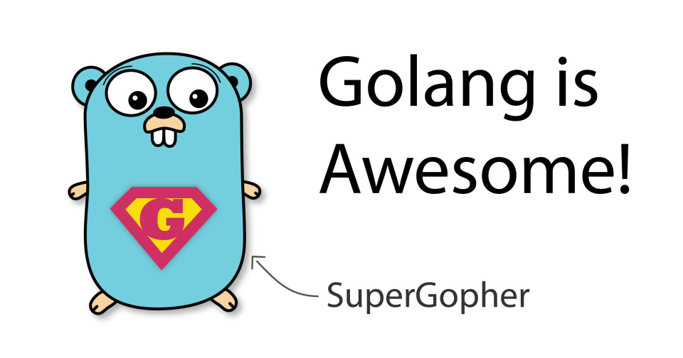

从这些角度看 Go 是一门很棒的语言
Go 当前引起了很多关注。让我们看一下 Go 好的部分。

我最近用 Go 写了一个 SSH 服务器 ，在其中启动容器。该项目已经发展到很大规模，并且我还向 Go 发起了 PR ，以修复我发现的错误。在积累了比 “Hello world！” 更多的经验之后，现在我有信心写出我真正喜欢的 Go 语言部分。
跨平台
Go 引起我注意的原因之一是其构建系统。Java 的最初承诺是它是跨平台的，但是它需要安装运行时的事实显然是一个失败。而 Go 编译为本地二进制文件。在 Windows 上，您将获得一个 .exe 文件，在 Linux 上，您将获得一个 ELF 二进制文件，依此类推。而且，除非您使用 cgo，否则 Go 程序可以在几乎没有外部依赖的情况下运行。无需安装任何 .dll 或 .so 文件，Go 程序即可直接使用 。
大部分时候，除了某些函数需要 libc 外，Go 程序可以在完全没有外部依赖的情况下运行。
Go 可以用来构建真正的跨平台二进制文件而无需安装笨拙的运行时（例如使用 Java 或 Python），这一事实是 Go 的主要吸引点。
Goroutines 和 Channels
当我开始使用 Go 语言时，我意识到它对并发的处理是多么的酷。传统上，您将使用线程或单独的进程来同时运行多个任务（例如 Java，C，C ++）。另外，您也可以依靠协作式多任务处理（例如 Javascript）来达到相同的效果。
对于线程和进程，操作系统必须执行的每个切换都会造成资源损耗。这称为上下文切换。换句话说，一个使用大量线程的粗心程序员将带来性能问题。
另一方面，协作多任务将在单个线程上运行。每当一项任务必须等待某件事时，另一项任务就会运行。如果一个任务占用了 CPU，其他任务将被饿死。
Go 以巧妙的方式将两者结合在一起。让我们以以下示例为例：
func main() {
go someOtherFunction()
}
注意 go 关键字。通过使用此关键字，someOtherFunction() 可在 goroutine 中运行。想象一下 Go 作为线程池处理并发的方式。每当您运行 goroutine 时，它将在这些线程之一中运行。这样 Go 可以优化线程的使用以提高性能。
为了促进 goroutine 之间的数据传输，Go 引入了通道（channel），通道是应用程序中的消息队列，用于发送数据。
func main() {
chan done <- bool
go func() {
time.Sleep(2 * time.Second)
done <- true
}()
//This will wait until the goroutine finishes
<- done
}
从上面的代码中可以看到，<- channelname 将堵塞当前 goroutine 的执行，直到有可用数据为止，这使得并发编程非常容易。
如果您对更多细节感兴趣，请查看 channel ，上下文 和互斥锁 。
指针，Defer 和垃圾收集
当提到指针时，首先想到的是 C 或 C++。通常，这种记忆并不愉快。
在 Go 中，指针更像是引用。指针并非总是将数据复制到变量中，而是指向原始的内存。不管传递包含指针的变量多少次，任何修改都将始终更改原始值。
让我们看一个例子：
someVar := &someStruct{}
现在，变量包含指向该结构的指针。传递时，无论您复制指针多少次，它始终指代相同的内存空间。
但是，与 C 指针不同，Go 指针在不再需要时会自动进行垃圾回收。您无需担心使用后释放或缓冲区溢出漏洞，这些在 Go 中都不是问题。太棒了！
此外，您还可以使用 defer 语句来帮助您进行函数清除。考虑以下函数：
func foo() error {
close := func() {
// Do somehing to clean up stuff
}
err := doSomething()
if err != nil {
close()
return err
}
// Do something else
close()
}
如您所见，我们在此函数中调用了 close() 两次。如果 foo 函数有多个出口（返回），则需要为每个出口重复 close() 调用。
defer 语句完全可以解决此问题：
func foo() error {
close := func() {
// Do somehing to clean up stuff
}
defer close()
err := doSomething()
if err != nil {
return err
}
// Do something else
}
defer 语句保证 close 总是会被调用。
多返回值
这看似没什么，但是在编程语言中却很少见。
sshConn, chans, reqs, err := ssh.NewServerConn(tcpConn, config)
有什么理由不喜欢？
OOP（好的部分）
尽管 Go 没有类的概念，但仍然可以编写面向对象的代码。
假设有以下 Java 代码：
class TreeNode {
private List<TreeNode> nodes = new ArrayList();
public void addChild(child TreeNode) {
nodes.add(child)
}
}
在 Go 中，类似的代码如下所示：
type TreeNode struct {
children []treeNode
}
func New() *TreeNode {
return &TreeNode{}
}
func (treeNode *TreeNode) AddChild(child * TreeNode) {
treeNode.children = append(treeNode.children, child)
}
Go 将（treeNode *TreeNode）部分称为接收器。Go 中的 Receiver 可以使用与其他语言中的 this 关键字非常相似的任何数据类型和功能。
Slices
和许多其他低级语言一样，Go 将数组实现为固定大小的元素列表。创建后无法更改其大小。
另一方面，切片（Slice）是使它们动态化的技巧。当切片已满时，Go 会创建一个更大的切片新副本。Go 以尽可能少的复制的方式优化过程。
此外，Go slice 还具有创建不占用额外内存的子切片的简洁功能。这些切片引用原始的数组。如果更改切片中的数据，则原始数据也将更改。
import "fmt"
func main() {
data := []string{"a", "b", "c", "d"}
d := data[2:3]
// Will print [c]
fmt.Printf("%v", d)
d[0] = "f"
//Will print [a b f d]
fmt.Printf("%v", data)
}
如果您想深入了解，请继续阅读 Go by Example 。
库
选择 Go 的原因之一是库数量众多。SSH 客户端和服务器库？有 。适用于 AWS 的 SDK？同样有 。GitHub 操作库？当然有 。让我们尝试一些非常少用的东西……FastCGI 协议实现如何？当然也有 。
我可以继续，但是没多大必要了。Go 的普及无疑对生态系统有所帮助。
工具
构建 Go 拥有大量可用的工具。您拥有从自动代码格式化 ，测试到完整发布工具 的全套工具。几乎所有的都有很多工具。
结论
在代码组织方面，Go 当然有其缺点。但是，它特别适合用于各种任务的高性能软件开发。
那 Go 具体有哪些缺点呢？下次我们“喷一喷” Go 的缺点。
原文链接：https://pasztor.at/blog/go-is-awesome 编译：polaris